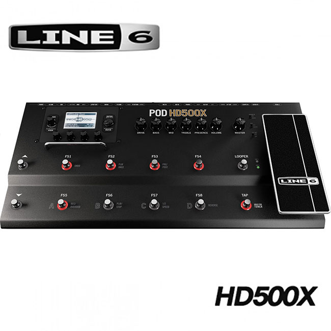
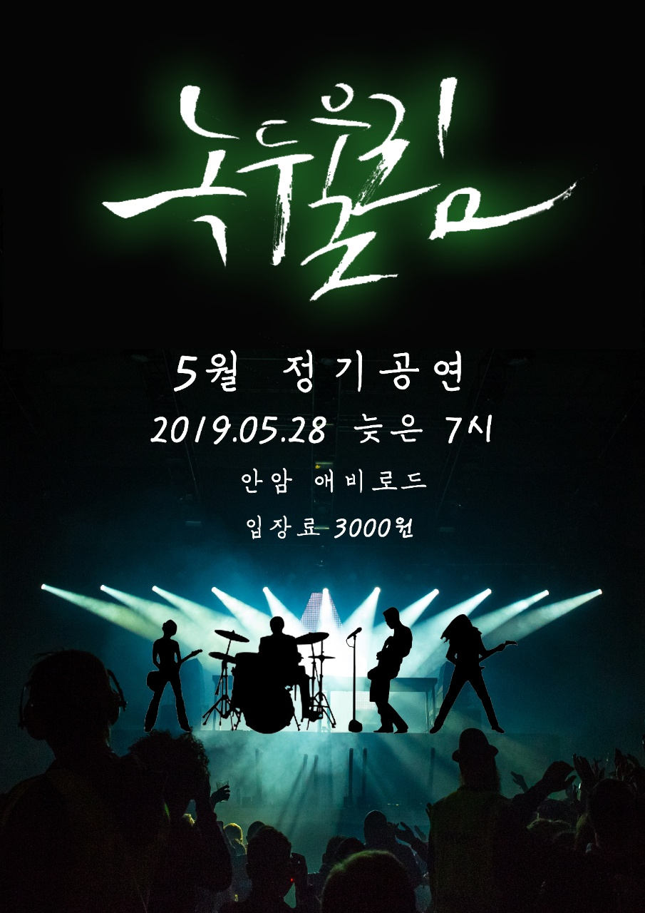
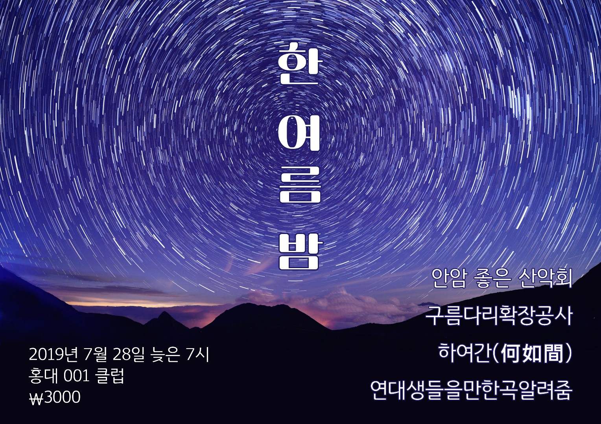
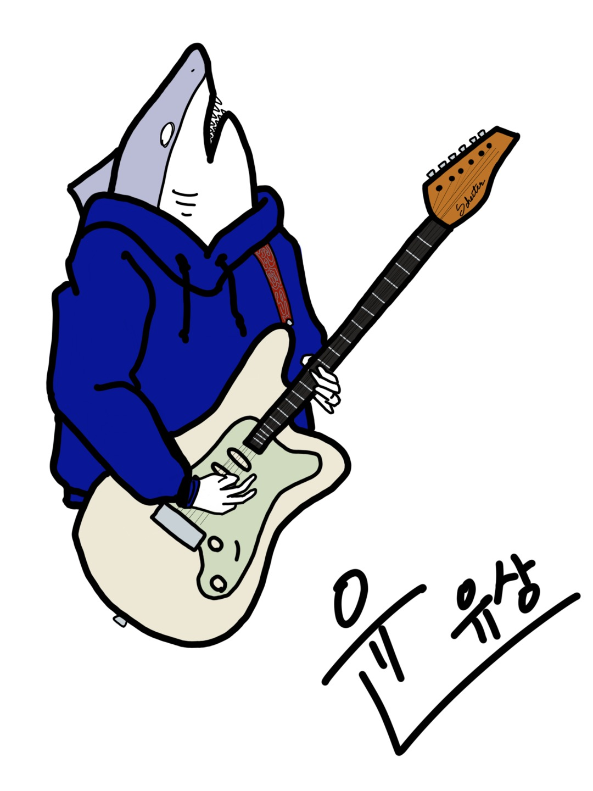

~ Monthly ~
2019.01
- [live performance] 울려드립니다 - 안암좋은산악회(Anam Joeun Sanakae)
click to watch
- Trust - 브로큰발렌타인(Broken Vallentine)
- 빛 - 라이프앤타임(LIFE&TIME)
- 내 마음에 주단을 깔고 - 라이프앤타임(LIFE&TIME)
- 호랑이 - 라이프앤타임(LIFE&TIME)
2019.02
- [live performance] 2019 녹두대축제 - 안암좋은산악회(Anam Joeun Sanakae)
click to watch
- Trust - 브로큰발렌타인(Broken Vallentine)
- 빛 - 라이프앤타임(LIFE&TIME)
- 내 마음에 주단을 깔고 - 라이프앤타임(LIFE&TIME)
- 호랑이 - 라이프앤타임(LIFE&TIME)
2019.03
- [live performance] 2019 band 'TRUSS' (Band of Korea University) 공연 찬조 - KEYS
click to watch
- 아가미 - 쏜애플(THORNAPPLE)
- 이유 - 쏜애플(THORNAPPLE)
- 어려운 달 - 쏜애플(THORNAPPLE)
- 너의 무리 - 쏜애플(THORNAPPLE)
- [quitted band] quitted KEYS
- [joined band] joined DAY6 커버밴드 - Korean Band DAY6 cover band.
- [live performance] 2019 녹두울림 워크샵 공연 - 안암좋은산악회(Anam Joeun Sanakae)
click to watch
- Trust - 브로큰발렌타인(Broken Vallentine)
- 강 - 라이프앤타임(LIFE&TIME)
- 내 마음에 주단을 깔고 - 라이프앤타임(LIFE&TIME)
- exiv98 - 라이프앤타임(LIFE&TIME)
- 호랑이 - 라이프앤타임(LIFE&TIME)
2019.04
- [gear sold] sold 1st effector. - BOSS GT-8
- [gear bought] bought 2nd effector. - LINE6 POD HD500X

2019.05
- [live performance] 2019 녹두울림 5월 정기 공연 - DAY6 커버밴드
click to watch
- 예뻤어 - DAY6
- 좋은걸 뭐 어떡해 - DAY6
- 어쩌다 보니 - DAY6
- Shoot Me - DAY6
2019.06
2019.07
- [live performance] 한 여름 밤 - 안암좋은산악회(Anam Joeun Sanakae)

click to watch
- 정점 - 라이프앤타임(LIFE&TIME)
- 강 - 라이프앤타임(LIFE&TIME)
- 내 마음에 주단을 깔고 - 라이프앤타임(LIFE&TIME)
- 땅 - 라이프앤타임(LIFE&TIME)
- exiv98 - 라이프앤타임(LIFE&TIME)
- [quitted band] quitted 안암좋은산악회(Anam Joeun Sanakae)
2019.08
- [live performance] 22 DAY PARTY - BPAP(Broken Pineapple Apple Pen)

click to watch
- 아가미 - 쏜애플(THORNAPPLE)
- 서울 - 쏜애플(THORNAPPLE)
- 석류의 맛 - 쏜애플(THORNAPPLE)
- M.K Dance - 브로큰발렌타인(Broken Vallentine)
- 내 낡은 서랍 속의 바다 - 브로큰발렌타인(Broken Vallentine)
- This Time - 브로큰발렌타인(Broken Vallentine)
- [quitted band] quitted BPAP(Broken Pineapple Apple Pen)
- [started youtube] started youtube.

click to go to youtube
- [youtube upload] 아가미 - 쏜애플(THORNAPPLE) cover video uploaded.
- [youtube upload] 이유 - 쏜애플(THORNAPPLE) cover video uploaded.
2019.09
- [youtube upload] 얼음요새 - 디어클라우드 cover video uploaded.
- [youtube upload] M.K. Dance - 브로큰발렌타인(Broken Vallentine) cover video uploaded.
- [youtube upload] 강 - 라이프앤타임(LIFE&TIME) cover video uploaded.
- [youtube upload] 피난 - 쏜애플(THORNAPPLE) cover video uploaded.
- [started military service...]
2019.10
2019.11
2019.12
~ Songs Practiced ~
- Trust - 브로큰발렌타인(Broken Vallentine)
- M.K Dance - 브로큰발렌타인(Broken Vallentine)
- 내 낡은 서랍 속의 바다 - 브로큰발렌타인(Broken Vallentine)
- This Time - 브로큰발렌타인(Broken Vallentine)
- 예뻤어 - DAY6
- 좋은걸 뭐 어떡해 - DAY6
- 어쩌다 보니 - DAY6
- Shoot Me - DAY6
- 빛 - 라이프앤타임(LIFE&TIME)
- 내 마음에 주단을 깔고 - 라이프앤타임(LIFE&TIME)
- 호랑이 - 라이프앤타임(LIFE&TIME)
- 강 - 라이프앤타임(LIFE&TIME)
- 땅 - 라이프앤타임(LIFE&TIME)
- exiv98 - 라이프앤타임(LIFE&TIME)
- 빛 - 라이프앤타임(LIFE&TIME)
- 아가미 - 쏜애플(THORNAPPLE)
- 이유 - 쏜애플(THORNAPPLE)
- 어려운 달 - 쏜애플(THORNAPPLE)
- 너의 무리 - 쏜애플(THORNAPPLE)
- 서울 - 쏜애플(THORNAPPLE)
- 석류의 맛 - 쏜애플(THORNAPPLE)
- 피난 - 쏜애플(THORNAPPLE)